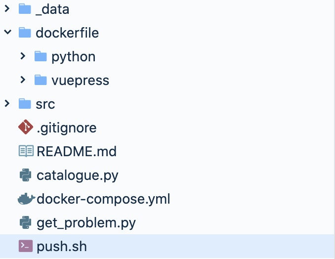
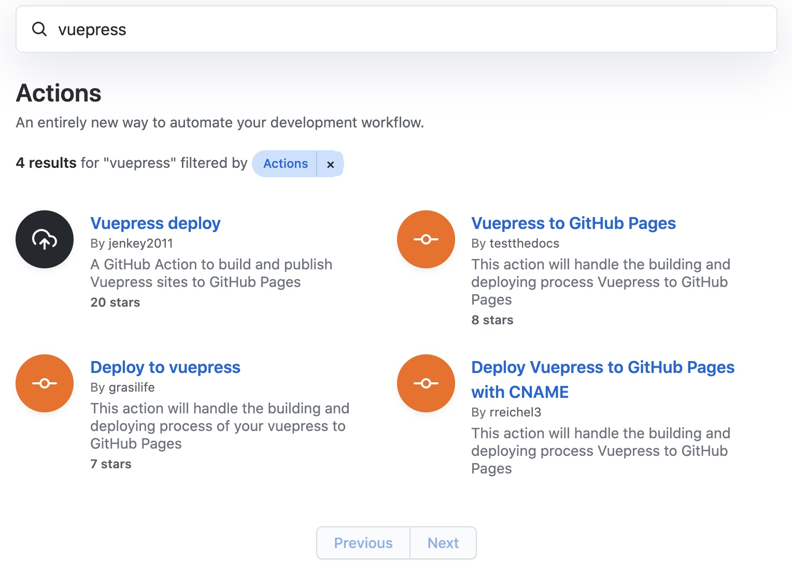
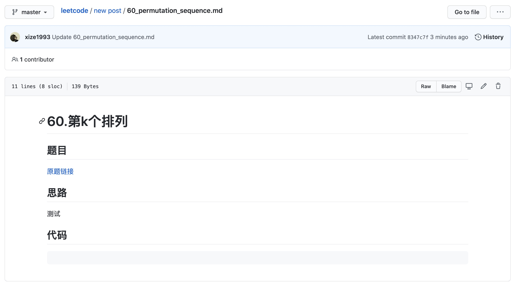
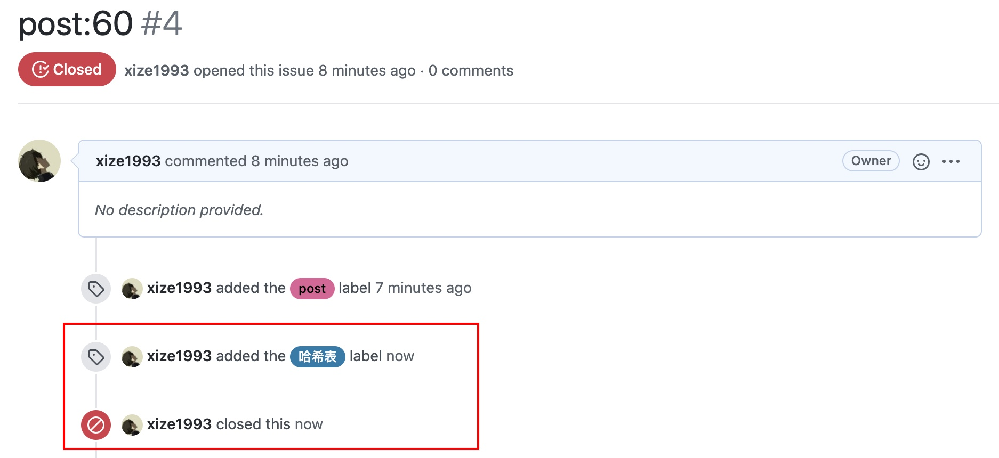
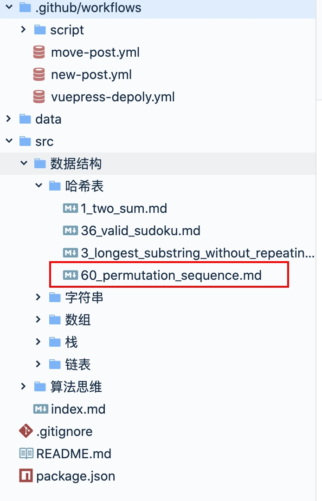
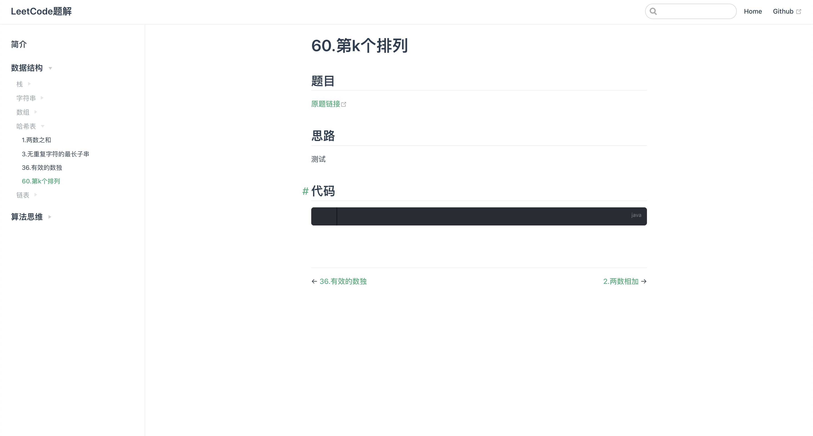

写在前面
最近尝试用GitHub Action来自动化部署我的leetcode刷题本，这是一个使用vuepress构建，托管在GitHub Page的静态网站。
一番折腾下来发现GitHub Action差不多可以满足我对自动化部署+不污染本地环境的需求了，这篇文章就来分享记录一下。
修改前的工作流
进入正题之前，先来介绍一下我旧的工作流：

上面的图片是用GitHub Action改造之前的目录结构，之前是用Docker和一些Python脚本来实现了一些自动化功能，以新建一个post为例，当时的工作流如下：
- 在leetcode官网解题
- 在本地调用
get_problem.py脚本，根据指定的题号生成新的post模板 - 将代码和解题思路填进模板
- 调用
push.sh脚本，它会完成下面这些操作:- 调用脚本更新vuepress配置文件(根据文件更新sidebar)
- 启动vuepress的docker镜像，生成静态文件
- 分别将markdown文件和生成的静态文件推送到master分支和gh-pages分支
上面这个工作流已经算得上简洁了，因为用了docker，也不需要在本地环境安装vuepress。
但改用GitHub Action可以更加的自动化，而且完全脱离本地环境。
GitHub Action改造
用Github Action的改造主要分为三步：
- 当post被push到master分支时，能够在Github Action环境中自动生成静态文件并提交到gh-pages分支
- 根据自定规则创建新issue时，自动生成一个post模板并提交到临时目录
- 在github网站编辑好post，关闭issue，自动将post移动到指定的目录，并且触发第一步
自动构建静态文件
静态博客最重要的肯定是生成静态文件，而这一步也是最简单了，因为GitHub Action已经有不少现成的第三方workflow了，直接拿来主义就好。

我直接用了上图第一个的vuepress-deploy，并且在执行deploy之前调用了python脚本生成vuepress的config文件（主要是生成sidebar）：
1 | name: vuepress-depoly |
这样子当我往master分支的src目录下push post的时候，就会触发这个workflow，vuepress-deploy默认会将生成的静态文件推送到gh-pages分支。
如果比较喜欢在本地环境写博客的话，到这一步就可以了，不过因为我的这个仓库是leetcode刷题本，基本上就是将leetcode上写的代码搬过来做记录而已，所以我就想直接在GitHub上完成全部的过程，而不需要在本地进行commit，push之类的操作。
根据新建issue创建post模板
这里我再创建一个Action如下：
1 | name: new-post |
这个Action在新issue被创建后会触发，在执行完post_generator.py脚本后，会直接用ad-m/github-push-action@master这个workflow将Github Action环境中的修改推送回仓库的临时目录中。
post_generator.py脚本的代码可以看这里，主要逻辑是调用Github的API获取最新的issue，从issue的title中获取我想要创建的leetcode题目编号，生成post的模板文件后放到临时目录。
这样子当我创建了类似“post:60”标题的issue后，马上仓库下就会有60_permutation_sequence.md的文件被创建，我就可以直接在Github上编辑它了。

根据issue关闭移动post
当我在将临时目录的post编辑完成后，便可以将issue打上分类关闭了，这时候会触发下面这个Action：
1 | name: move-post |
这个Action跟上面的差别不大，move_post.py脚本同样会读取issue信息，然后根据issue的label将临时目录的post文件移动到src/下面对应类别的目录下，然后触发第一步的Action构建vuepress。

上面的issue因为我打了哈希表的label，这是测试时候随便打的，我在src/目录下根据题目类型划分了目录，当label和目录名称匹配上时，post便会被移动到对应的目录下面：

当vuepress自动构建完成后，再访问gtihub page便可以看到新的文章了：

一些踩坑
Github Action会自动创建GITHUB_TOKEN，很多workflow都可以直接用GITHUB_TOKEN来做认证访问，访问仓库信息等等。
我在上面的三个workflow中也都用到了GITHUB_TOKEN，不过在关闭issue，移动post到src目录来触发vuepress-depoly的时候，一直没法触发成功，后来查了才知道Github官方为了防止开发者无意识触发了workflow之间的死循环做了限制，通过GITHUB_TOKEN对仓库本身进行修改是无法触发别的workflow的，可以通过Github的personal access token来达到我们的目的，详情可以查看官网。
写在最后
目前我的博客的仓库还没有用Github Action，主要是博客的图片也是托管在Github上的，目前还绕不开从本地提交图片文件这一步，而且现在写博客的频率是真的不高，先就这样吧。